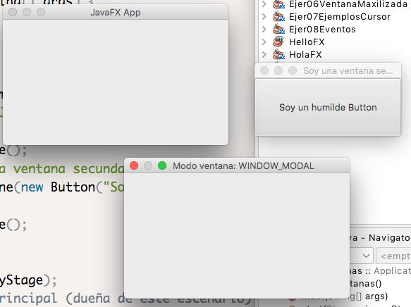

En este ejemplo veremos como mostrar varias ventanas en un aplicación.
Veremos como bloquear la ventana principal desde la secundaria (MODAL).
En este ejemplo veremos como mostrar varias ventanas en un aplicación.
Veremos como bloquear la ventana principal desde la secundaria (MODAL).
import javafx.application.Application;
import javafx.scene.Scene;
import javafx.scene.control.Button;
import javafx.stage.Modality;
import javafx.stage.Stage;
public class Ejer03Ventanas extends Application {
public static void main(String[] args) {
launch(args);
}
@Override
public void start(Stage primaryStage) {
primaryStage.setTitle("JavaFX App");
Stage stage1 = new Stage();
stage1.setTitle("Soy una ventana secundaria");
stage1.setScene(new Scene(new Button("Soy un humilde Button")));
Stage stage2 = new Stage();
stage2.setX(300);
stage2.setY(300);
stage2.initOwner(primaryStage);
// bloquea la ventana principal (dueña de este escenario)
stage2.initModality(Modality.WINDOW_MODAL);
//stage2.initModality(Modality.APPLICATION_MODAL); // bloquea todas las ventanas
//stage2.initModality(Modality.NONE);
stage2.setTitle("Modo ventana: " + stage2.getModality());
primaryStage.show();
System.out.println("Hemos lanzado el 'Stage' primario.");
stage1.show();
System.out.println("Hemos lanzado el 'Stage' secundario.");
stage2.showAndWait();
System.out.println("Hemos cerrado el 'Stage' " + stage2.getTitle());
}
}
setTitle(String value)
public final void setTitle(String value) Sets the value of the property title.
Define el título del escenario.
Default value: empty string
setX(double value)
public final void setX(double value) Sets the value of the property x.
La ubicación horizontal de este escenario en la pantalla. Cambiar este atributo moverá el escenario horizontalmente. El cambio de este atributo no afectará visualmente a un escenario mientras FullScreen sea verdadero, pero el escenario lo respetará una vez que FullScreen se convierta en falso.
setY(double value)
public final void setY(double value) Sets the value of the property y.
La ubicación vertical de este escenario en la pantalla. Cambiar este atributo moverá el escenario verticalmente. El cambio de este atributo no afectará visualmente a un escenario mientras FullScreen sea verdadero, pero el escenario lo respetará una vez que FullScreen se convierta en falso.
initOwner(Window owner)
public final void initOwner(Window owner)
Especifica la ventana del propietario para esta escena, o nulo para una escena sin propietario de nivel superior. Esto debe hacerse antes de hacer visible el escenario.
Default value: null
Parameters: owner - the owner for this stage.
initModality()
public final void initModality(Modality modality)
Especifica la modalidad para el escenario. Esto debe hacerse antes de hacer visible el escenario. La modalidad es una de:
Default value: Modality.NONE
Parameters: modality - the modality for this stage.
initStyle()
public final void initStyle(StageStyle style)
Especifica el estilo para este escenario. Esto debe hacerse antes de hacer visible el escenario. El estilo es uno de:
Default value: StageStyle.DECORATED
Parameters: style - the style for this stage.
Para ver todos los métodos de la clase Stage
Obra publicada con Licencia Creative Commons Reconocimiento Compartir igual 4.0